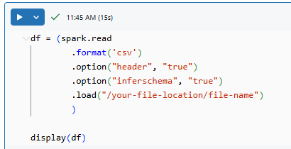
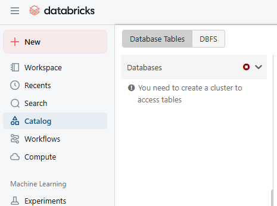

Databricks is a cloud-based platform designed for data engineering, machine learning, and analytics, built on the open-source Apache Spark.
Databricks brings Apache Spark to the Cloud Platform. In fact, Databricks product is known as Databricks Cloud. And the Databricks Cloud is only available on the Cloud platforms. But they are available on AWS, Azure, and Goole Cloud.
So Databricks brings Apache Spark on all the major cloud platforms. Databricks allows you to launch a Cluster for running Spark applications automatically. That takes a lot of burden from you. You do not need to configure and launch a cluster manually for running your Spark applications. Databricks allows you to start, configure, and install all the dependency and runtime libraries on all the nodes to run your Spark application.
So, in a nutshell, Databricks offers you an easy way to configure, launch, and shut down the clusters in the cloud environment.
Databricks Cloud also offers you Notebooks and Workspace for Spark development. These workspace and Notebooks are as good as IDE for spark development. You can use the notebooks to develop, share and collaborate with your colleagues for Spark development.
Databricks Spark runtime is 5x faster than the standard Apache Spark runtime.
This lecture will help you set up Databricks Community Edition and create your first Application inside it.
We'll use a free, lightweight community version but you should register for the account creation. You can use Databricks Community to start with the signup process if you haven't any account yet.
After successfull login, You can see the home page of the Databricks community edition.
Lets create a small, very simple, Spark project, using the Databricks Workspace:
You can go to Workspace. Workspace menu allows you to create project directories. By default, you will see two directories already created here, Shared and Users. Shared directory is a shared location for sharing your project code with other users, but you should have a multi-user environment. But currently, we are into a single user environment.
Once your project directory is created, you can create notebooks inside your project directory. Notebook is a file where you can write code and execute it.
This is where you can write your code. I want to read a data file from some directory location and bring it into the Spark memory, and then display, very simple thing.

What it will do, it will read the data file, load it, bring it into the memory in the data frame variable df, and display that data frame.
Spark programs execute on a cluster of machines, so we need a cluster machine.
Databricks gives you one single-node free cluster facility in the Community Edition. You can see this Compute menu, click this Compute menu, and we can create a cluster.
Hit the Create compute button, and Databricks environment will allow you to create one free cluster
For executing this code, We need to attach it to a cluster. For attaching a cluster, we can come at the top of the notebook, hit the Connect button. It usually takes five minutes to start a cluster. Once the cluster is created you can attach it.
This program needs to read data file from some location and then bring it into the Spark memory and then display.
Spark applications are usually designed to do data processing, so you need data. Databricks Community Edition also gives you facility to upload some data files in the cloud.
Databricks Community Edition got some free storage in the cloud for keeping your data.
You can come to the Catalog menu and you will see something called DBFS here.

DBFS is Databricks file system. It is a wrapper on the cloud storage. Behind this DBFS, we have Amazon S3 storage. Databricks mounts the S3 storage on the DBFS file system and allows us to upload or save or read or write data into the DBFS.
In some cases, you might not see this DBFS so if that is the case, you can come to this setting and make it enable.